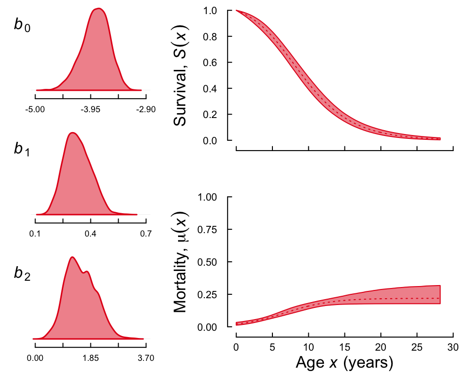

Introduction
You will no doubt already have noticed that the two arguments concerning the mortality model, model and shape allow for a large number of variations. This section will explore these variations and introduce a new function multibasta() which simplifies fitting several models to the same data set.
Alternative functional forms: one at a time
To test other functional forms of age-specific mortality such as Weibull (REF), logistic (REF) or a simple model that assumes that mortality is constant at all ages (i.e. exponential survival), we can use the model argument in function basta(). For example, let’s run a Weibull model that assumes that mortality is a power function of age, which only requires to add to the arguments of the function “model = "WE"”. We will call the output object wsnc for “Weibull, simple, no covariates”. Here is the updated code
wsnc <- basta(dat, studyStart = 1970, studyEnd = 2000, model = "WE",
nsim = 4, ncpus = 4, parallel = TRUE)As before, use function summary() as
summary(wsnc)
#>
#> Output from BaSTA version 1.9.4
#>
#> Call:
#> Model : WE
#> Shape : simple
#> Covars. structure : fused
#> Minimum age : 0
#> Cat. covars. :
#> Cont. covars. :
#>
#> Model settings:
#> niter burnin thinning nsim
#> 11000 1001 20 4
#>
#> Jumps and priors:
#> Jump.sds Prior.means Prior.sds
#> b0 0.256663 1.50 1
#> b1 0.009318 0.05 1
#>
#> Mean Kullback-Leibler
#> discrepancy calibration (KLDC):
#> KLDC was not calculated due to lack of convergence,
#> or because covariates were not included in the model.
#>
#> Coefficients:
#> Estimate StdErr Lower95%CI Upper95%CI SerAutocor UpdateRate
#> b0 1.84304 0.082085 1.68708 2.00982 0.4159 0.2524
#> b1 0.08921 0.002523 0.08458 0.09444 0.2836 0.2431
#> pi.1970 0.49975 0.007950 0.48420 0.51501 0.1203 1.0000
#> PotScaleReduc
#> b0 1.0005
#> b1 1.0020
#> pi.1970 0.9992
#>
#> Convergence:
#> Appropriate convergence reached for all parameters.
#>
#> DIC:
#> 7428You can use the function plot to confirm that the chains have converged properly with
plot(wsnc)
Here is the fancy plot
plot(wsnc, fancy = TRUE)
Now let’s run a logistic model and compare it to the Gompertz and Weibull outputs. To do this, we only have to change the argument to model = "LO". We will call the output object lsnc for “logistic, simple, no covariates.”
lsnc <- basta(dat, studyStart = 1970, studyEnd = 2000, model = "LO", niter = 22000, burnin = 2002, nsim = 4, ncpus = 2, parallel = TRUE)which should produce a summary as
summary(lsnc)
#>
#> Output from BaSTA version 1.9.4
#>
#> Call:
#> Model : LO
#> Shape : simple
#> Covars. structure : fused
#> Minimum age : 0
#> Cat. covars. :
#> Cont. covars. :
#>
#> Model settings:
#> niter burnin thinning nsim
#> 22000 2002 20 4
#>
#> Jumps and priors:
#> Jump.sds Prior.means Prior.sds
#> b0 0.35658 -3e+00 1
#> b1 0.04093 1e-02 1
#> b2 0.35580 1e-10 1
#>
#> Mean Kullback-Leibler
#> discrepancy calibration (KLDC):
#> KLDC was not calculated due to lack of convergence,
#> or because covariates were not included in the model.
#>
#> Coefficients:
#> Estimate StdErr Lower95%CI Upper95%CI SerAutocor UpdateRate
#> b0 -3.8587 0.260738 -4.4150 -3.3967 0.7924 0.2737
#> b1 0.3292 0.071855 0.2019 0.4756 0.9196 0.2763
#> b2 1.5208 0.501926 0.6515 2.5333 0.9107 0.2757
#> pi.1970 0.4995 0.008287 0.4837 0.5157 0.1719 1.0000
#> PotScaleReduc
#> b0 1.002
#> b1 1.010
#> b2 1.017
#> pi.1970 1.002
#>
#> Convergence:
#> Appropriate convergence reached for all parameters.
#>
#> DIC:
#> 7757and a fancy plot that should look like the following
plot(lsnc, fancy = TRUE)
Go have a coffee… multibasta
With this version of BaSTA we provide the function multibasta which allows users to run different models and shapes without having to specify them one at a time. The only difference with function basta() is that, instead of specifying a single model and shape, we can use arguments models and shapes to specify more than one functional forms. Let’s run once again the analysis above and we will store the results in the object multinc. This may take some time!
multinc <- multibasta(dat, studyStart = 1970, studyEnd = 2000, niter = 22000, burnin = 2001, models = c("GO", "WE", "LO"), shapes = "simple",
nsim = 4, ncpus = 4, parallel = TRUE)Model fit
To compare the outputs between parameters with different functional forms, BaSTA provides a measure of model fit known as Deviance Information Criterion, DIC (for a description see box 1). As with other information theoretic measures such as AIC or BIC, the model with the lowest DIC value is assumed to provide the best fit. To extract the DIC values and compare the models, we can simply refer to function summary() or type
wsnc$DIC
lsnc$DICHere is where using the output from function multibasta() might be a better option. We can visualize the results with function summary() as
summary(multinc)
#>
#> BaSTA version 1.9.4
#>
#> Call:
#> Covars. structure : fused
#> Minimum age : 0
#> Cat. covars. :
#> Cont. covars. :
#>
#> Model settings:
#> niter burnin thinning nsim
#> 22000 2001 20 4
#>
#> DICs:
#> model shape D.ave D.mode pD k DIC DICdiff Rank
#> 3 WE simple 5336 3260 2076 3 7412 0.0 1
#> 2 GO simple 5315 3181 2133 3 7448 35.7 2
#> 4 LO simple 5364 3085 2279 4 7643 230.9 3Model Fit: Deviance Information Criterion, DIC
If all parameters have converged, BaSTA calculates the deviance information criterion (DIC; Spiegelhalter, 2002), which has been described as a measure of predictive power and a criterion for model fit. DIC approximates the expected predictive deviance, and is calculated as
$\mathrm{DIC} = 2\hat{D}_{avg}(y) - D_{\hat{\theta}}(y)$
where y denotes the observed data, $\hat{D}_{avg}(y)$ is the mean discrepancy between the data and the model as a function of the parameters θ, averaged over the posterior distribution, and $D_{\hat{\theta}}(y)$ is the discrepancy at the posterior mode (here represented by the point estimate $\hat{\theta}$). In order to improve the measure provided, BaSTA’s DIC is calculated as an approximation of the group-marginalized DIC presented by Millar (2009).